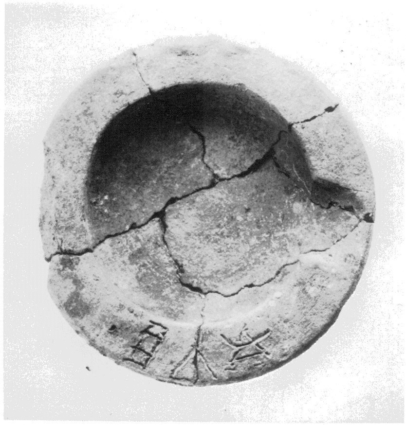
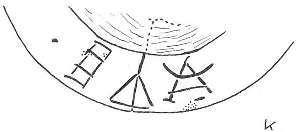

-
KEZb4
Names
KEZb4, KE Zb 4
Support
Clay vessel
Location
Kea
Findspot
Unavailable


Scribe
Unavailable
Context
Middle Minoan III
1750-1600 BCE
Dimensions
Catalogue
Readings
1 1 0 *900 none
1 1 1 JA none
1 1 1 SI none
1 1 1 E none
𐄁𐘱𐘤𐘡
*900JASIE
𐄁𐘱𐘤𐘡
*900JASIE
KE Zb 4
(K.2484) (GORILA IV: 72), lamp (Area N, found with KE
1 and Wc 2; MM III context)
• JA-
SI
-E
Since the • (word-divider) precedes the
signs, it
is
possible that this inscription should read retrograde: E-
SI
-JA
(GORILA). -SI-JA occurs 3 times: HT Zb 159 (A-NA-NU-SI-JA-SE[), HT 28a.1 & b.1-2 (A-SI-JA-KA), PE Zb 3 (KI-TA-NA-SI-JA-SE). JA-SI does not recur.
Commentary © John Younger
References
papers/GORILA-Vol4.pdf#page=114